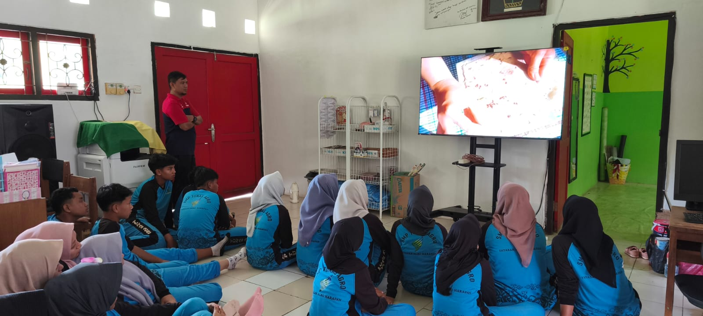
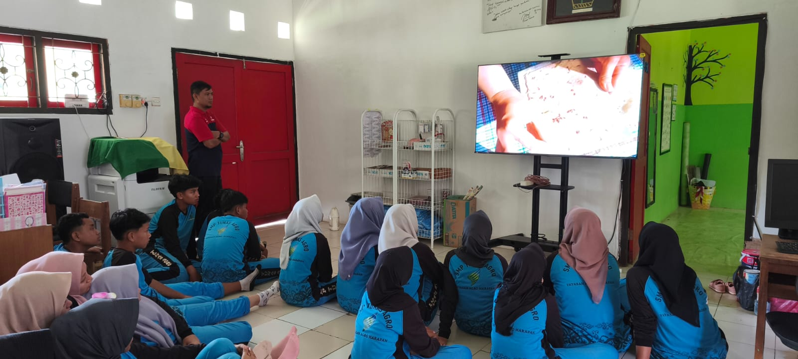
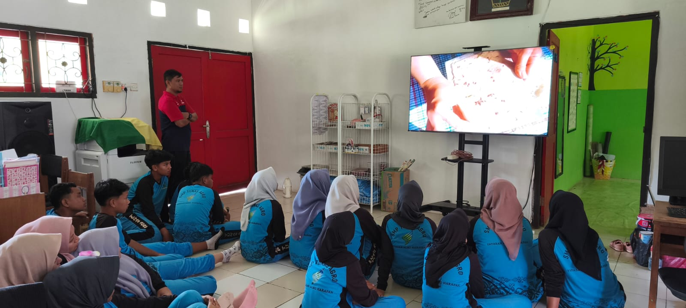

Wujudkan Sekolah Hijau, Masa Depan Cemerlang
SMP Tunas Agro berkomitmen menciptakan lingkungan sekolah yang peduli dan berbudaya lingkungan.
Lihat Program Kami

SMP Tunas Agro berkomitmen menciptakan lingkungan sekolah yang peduli dan berbudaya lingkungan.
Lihat Program KamiKami bertujuan untuk mengintegrasikan nilai-nilai lingkungan ke dalam seluruh aspek pendidikan, mulai dari kurikulum, kegiatan siswa, hingga manajemen sekolah.
Menjadi sekolah Adiwiyata mandiri yang unggul dalam pelestarian fungsi lingkungan dan pembangunan berkelanjutan.
Reduce, Reuse and Recycle. Sekolah tanpa sampah plastik dan berkomitmen mengelola sampah menjadi barang yang berguna.
Pemanfaatan air hujan untuk penyiraman tanaman di lingkungan sekolah, menghemat penggunaan air bersih.
Integrasi isu lingkungan hidup ke dalam semua mata pelajaran untuk kesadaran yang lebih mendalam.

22 November 2025
Sekolah sukses menyelenggarakan workshop inovatif berjudul "Pembuatan Bahan Bakar Ramah Lingkungan"
Baca Selengkapnya
10 November 2025
Mengurangi jejak karbon berarti berusaha mengurangi hal-hal yang bisa menambah polusi udara. Caranya bisa sederhana, mulai dari memilih transportasi hingga pengelolaan limbah rumah tangga.
Baca Selengkapnya
20 September 2025
Edukasi pentingnya menjaga lapisan ozon oleh Agronomy PT Agro Indomas. Baca Selengkapnya
20 September 2025
Dalam semangat gerakan global World Clean Up Day (WCD), SMP Tunas Agro menunjukkan komitmennya terhadap kelestarian lingkungan dengan mengadakan aksi bersih-bersih besar-besaran.
Baca Selengkapnya